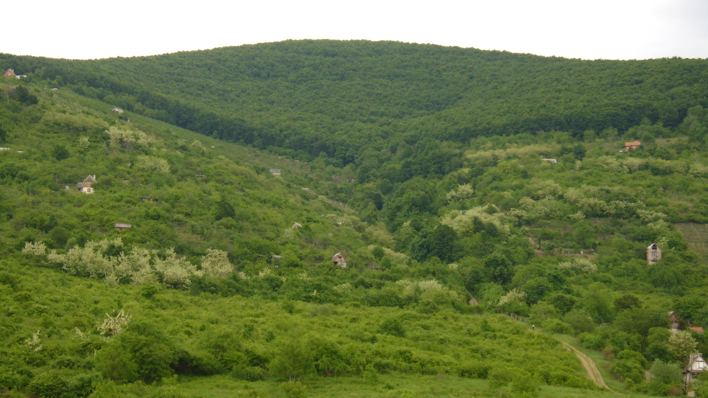
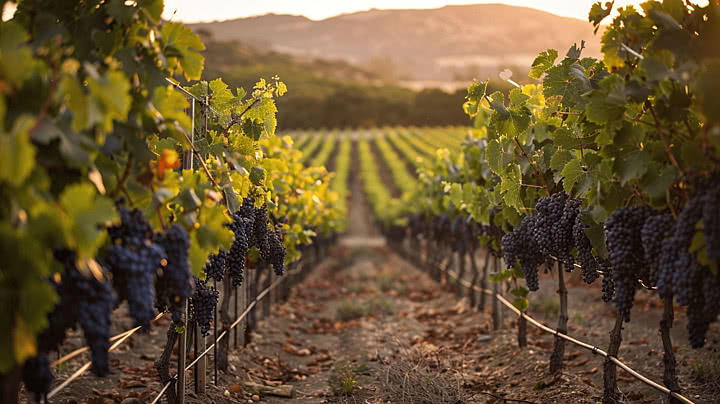
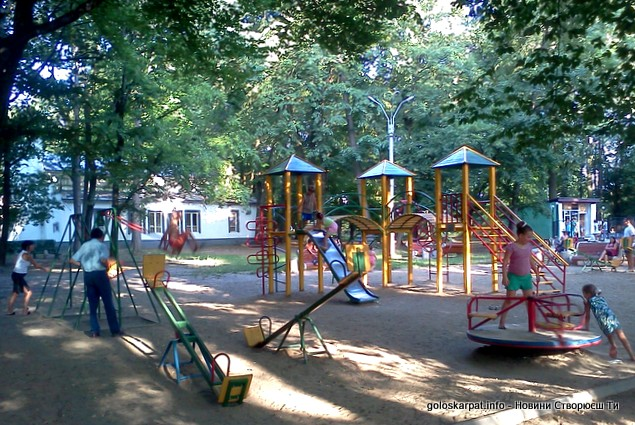
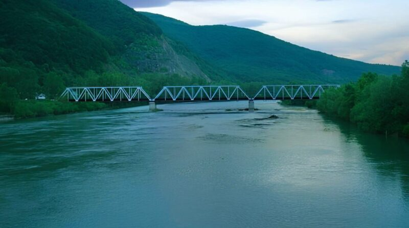

Відомі місця Виноградова
Виноградів багатий на природні та історичні пам'ятки. Тут кожен турист знайде цікаві місця для відпочинку та подорожей.

Чорна гора
Відома природна пам'ятка біля Виноградова. Звідси відкриваються чудові краєвиди на місто та долину Тиси.

Замок Канків
Руїни середньовічного замку, що нагадують про багату історію міста.

Палац Перені
Одна з найцікавіших історичних пам'яток Виноградова.

Виноградники
Виноградів славиться своїми виноградниками та виноробними традиціями.

Міський парк
Гарне місце для прогулянок та відпочинку жителів і гостей міста.

Річка Тиса
Одна з найбільших річок Закарпаття, що протікає неподалік міста.